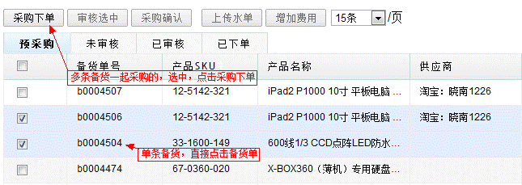
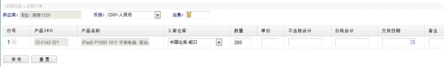
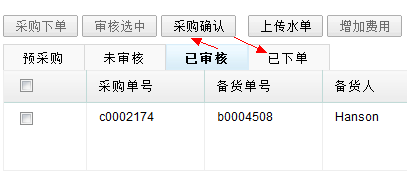
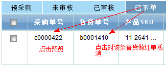
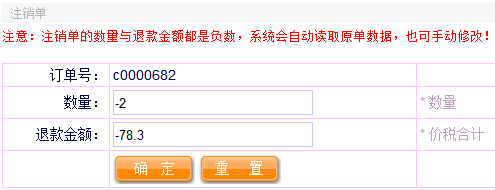
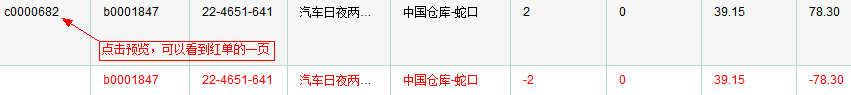

采购订单
采购操作是备货申请的后续工作，是采购入库的前续工作。采购操作同样具有几个工作流标签，其中包括预采购、未审核、已审核、已下单。也有几个操作按钮，有些操作按钮只能在某个工作流标签中使用，下面分别来讲解几个工作流。
1、工作流标签功能介绍。
预采购：
(1)为衔接上一级的操作(备货申请)，预采购中显示的是已接收的备货申请，即需要做采购的备货申请，如上图所示，第一列显示的是备货单号，如果是对单条申请进行采购，直接点击该备货单号即可，如果是多条备货申请的产品都是来自同一个供应商，在需要一起采购的备货申请前面打上勾，点击采购下单按钮，即可进行批量采购。

(2) 权限说明，对备货单下采购单需要配置权限，一般配给采购人员，为保证自己接收的备货申请不被他人采购，即便是采购人员，也只能对自己接收的备货申请进行采购。
(3) 采购下单填写，点击某条备货单，或批量选中备货单点击采购下单后，跳到采购下单的资料填写页面，系统会根据源单读取一些基本信息，如产品SKU、产品名称、备货仓库、接收仓库、数量等等，如下图。

数量 - 系统默认取原备货单数量，可手动修改，当采购的数量小于原单数量，可改小，不改动即采购数量与原备货数量相等，保存后，原备货单会自动标记为上面所说的完成状态，完成状态的备货单，不会出现再出现在预采购中。
价格 - 价格分单价、不含税合计、价税合计，填了数量与单价，不含税合计与价税合计会自动算出。
运费 - 运费是本次采购成本，系统将运费成本平摊给每个产品，输入运费，点击"sure"，自动增加每个产品的单价，计算公式：
每个产品增加的单价 = 运费/本单总数量(如果无法整除的，最后一条记录会作调整)，同时备注会自动填上含运费多少钱，无需再手动填写。
不含税合计与价税合计 - 填写完数量和单价，该两项会自动补上，即默认等于数量*单价。
交货日期 - 选择大概的交货日期。
(4)关闭功能，如果由于联系供应商无货等原因，需要取消某条备货申请，让它不再在预采购中显示，可以点击页面中的“关闭”，即可关闭该申请，关闭备货申请需要配置权限。
未审核：
刚下的采购订单会显示在未审核状态中，等待相关人员审核，在该状态的采购单可以进行几个操作。
(1) 审核，在需要审核的采购单前打上勾，点击功能栏上的审核选中按钮，即将当前选中的采购单转至已审核状态。审核需要配置权限，通过审核采购单可以进行付款等操作。
(2) 打印预览，直接点击该采购单的单号，即跳转到新的页面，显示打印预览的内容，如产品列表，数量，价格合计等内容。
- 编辑与删除，针对有可能填写错误的情况，未审核过的采购单可以进行更改，编辑与删除一样，默认都是只能编辑与删除本人下的订单，不能随便回退与修改他人订单，当对他人的订单进行修改与回退，系统会弹出错误提醒无权限，另外在编辑界面，删除所有记录后保存，也是等同于删除该采购单。
- 金碟导出，是导出用于导入金碟的表格。
编辑-有一点需要注意的是，当对一个备货单下了采购订单后，如上所说，当采购数量与备货单数量相等，之前的备货单会消失在预采购中，然后在对未审核的采购单进行编辑时修改了数量，修改后的数量比原备货单小，那么原备货单又会出现在预采购中，供下次继续采购。
删除-该采购单，操作成功后，该采购单对应的备货单会又重新显示在预采购，可重新下采购单。
另注：未审核状态的采购单与下一状态已审核的备注可以直接点击编辑。
已审核：
在未审核中对采购订单进行审核后，将会显示在已审核中。
(1)支付，在该状态可以进行功能有上传水单，即对已付款的订单进行上传一张支付凭证。勾选需要上传水单的采购单号(只能勾选一个订单，选中多个订单会弹出错误)，然后点击功能按钮上传水单，即入上传水单的页面，选择图片上传即可，可上传多张图片，下方罗列上传过的图片，可以进行删除等管理操作，若想为红单上传水单，则需要勾选红单，另外对于那些周结，月结的，可以快速选择，无须重复传图片。

保存成功后，该采购单会自动变成已付款，可以看到该采购单由原来的“未付款”字样变为上传的图片，点击图片可以查看大图。
(2) 反审操作，可以对已审核的采购订单进行反审，反审过的订单会退回至未审核状态，已经上传过水单的采购单，反审依然保留水单图片，反审的权限取后续跟踪权限。
(3) 在已审核状态中，当采购人员查看到该采购单有财务的付款凭证，可以将该支持凭证给供应商，并联系发货，存在有些供应商是多次采购最后一次付款的，所以只要采购人员与供应商联系得知该采购产品已发货后，采购人员需要进行采购确认，可批量打勾确认。此操作需要配置采购确认权限，一般配置给采购人员。确认后的采购订单将会跳转到最后一个状态，即已下单，如下图：

已下单： 在已下单中的订单，将会在另外一个仓管人员可见的入口看到，当这批采购的产品到货，仓管人员可以根据该采购单做入库操作。在该状态中可以看到一列已入库数量，还有一列关闭标志，当仓管人员对采购单全部做了数量入库，入库数量会与采购数量相等，并且关闭标志为Y，即已关闭，至此完成这次备货->采购->入库流程。
(1) 增加其它费用，已下单状态的订单只供根据查看，不能做任何修改，可以进行的操作有打印预览，与前两个标签状态一样。另外有一个增加其它费用功能按钮，同样，只能选中一条订单，并且此操作需要配置权限，一般只配置给财务人员。
进入增加其它费用页面，只需要填写名称与金额，保存成功后会回
写该采购单的产品采购成品。
公式：增加的费用 = 填写金额 / 采购单数量。
新产品成本 = 原单价 + 增加的费用。
另外系统会自动在该采购单后追加备注。
格式：“含(填写名称+填写金额+元)。”
(2) 制作红单，当采购单到了已下单状态，但由于某种原因供应商无法出货而退还付款，而该采购单又未完全完成入库，采购人员需要制作红字单，红字单会抵消原单的数量与金额。在已下单状态的订单，点击第一列的采购单号与前两状态一样，可进入打印预览页面，如果该订单存在红单，与前两状态不同的是，会多出一页红单，红单的数量与金额都是负数。


如上图，制作红单是针对该采购订单中的某条备货单，所以只需点击第二列的备货单号，即进入红单制作页面，填写数量与金额，保存即可。如果该采购订单有几个备货单，需要全部抵消，那么分别对每条备货单制作红字抵消单。有红字抵消单的采购订单，会在最后一行显示红色的抵消单记录，红字单后面有个"x" 当记录错误时用于填错资料时可删除红单重做。

附注：制作红字抵消单会同时影响仓管的入库操作，正常采购单，仓管入库数量等于源采购数量，该采购单即会自动关闭，标识该采购订单已完成。当制作了红字抵消单，那么当：
入库数量 = 源单数量 - 红单数量
时，该采购单即会自动关闭。
(3) 反下单，成功后订单将退至已审核状态，前提是该订单未发生过入库，若已发生入库操作，则需要反入库，反下单的权限取跟踪权限，即需要执行“确认下单”的人进行反下单，或者同部门的管理层。
2、搜索与分页介绍
采购操作页面中，可按产品SKU、名称、单号搜索(预采购按备货单号搜索，其它三个工作流显示的是采购单按采购单搜索)、付款状态(在已审核与已下单有效)、接单人等条件进行搜索。
另外在预采购中，有时可能会对多条备货单进行一批采购，然而刚好显示在不同的页数中，此时可以点击功能按钮最右边的每页显示多少条记录的下拉框，进行每页显示条数的调整，例如：可选择200条/页，让想要的记录显示在同一页。